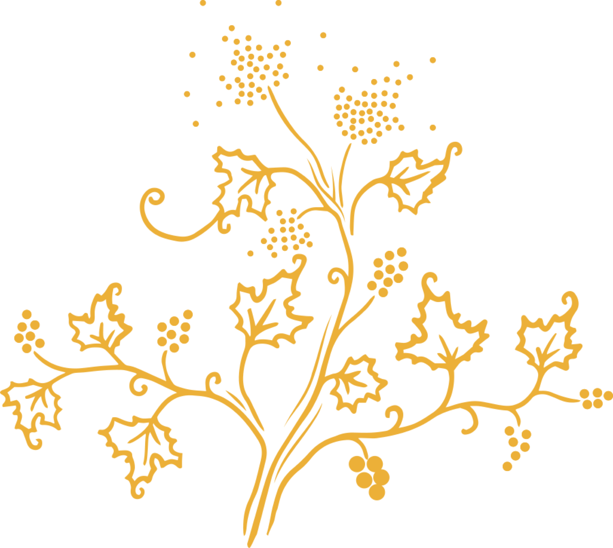
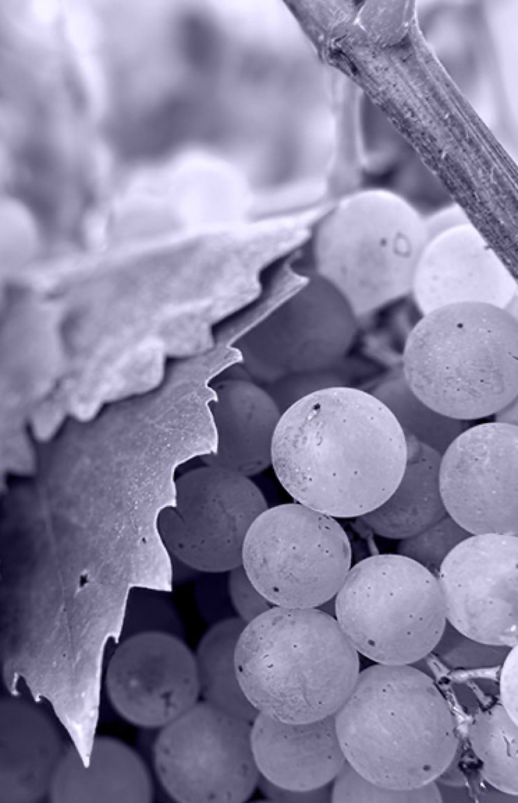

Pineau des Charentes
Hvid Pineau
Økologisk hvid Pineau des Charentes lavet med Colombard og Ugni Blanc, uden tilsatte sulfitter.
Økologisk hvid Pineau des Charentes lavet med Colombard og Ugni Blanc, uden tilsatte sulfitter.
Økologisk hvid Pineau des Charentes lavet med Colombard og Ugni Blanc, uden tilsatte sulfitter.
Køb hos Vinoble

Smagning
Smagsmarkører
Smagning
Denne hvide Pineau des Charentes fremstilles af en blanding af cognacdestillater og druemost fra vores Colombard- og Ugni Blanc-druer. Den har lagret i mange år på egetræsfade, hvilket giver den sin klare ravfarve. I munden findes noter af kandiseret frugt og vanilje. Det er en rig, fyldig Pineau med struktur og harmoniske noter.
Sensoriske noter
Sensoriske noter
- Mund:Brioche, frisk druesaft, pære, sveske, vanilje
- Farve:Gyldengul, strågul, klar
- Næse:Udarbejdet og balanceret. Fin sammensætning af frugtige noter, friske druer og pære, med vanilje
- Gane:Rig, fyldig, kompleks
- Afslutning:Frugtig, intens, fyldig
Detaljer
Produktdetaljer
- Kategori
- Pineau des Charentes
- Oprindelse
- Frankrig
- Indhold
- 750 ml
- Alkoholprocent
- 17,5 % vol
- Druesorter
- Ugni Blanc, Colombard, Folle Blanche
- GTIN
- 3322870002227
Næringsværdier
| Næringsstof | Pr. 70 ml | Pr. 100 ml |
|---|---|---|
| Energi | 462 kJ / 107,8 kcal | 660 kJ / 154 kcal |
| Alkohol | 9,66 g | 13,8 g |
| Fedt | 0,35 g | 0,5 g |
| heraf mættede fedtsyrer | 0,35 g | 0,5 g |
| Kulhydrat | 9,8 g | 14 g |
| heraf sukkerarter | 9,8 g | 14 g |
| Protein | 0,35 g | 0,5 g |
| Salt | 0 g | 0 g |